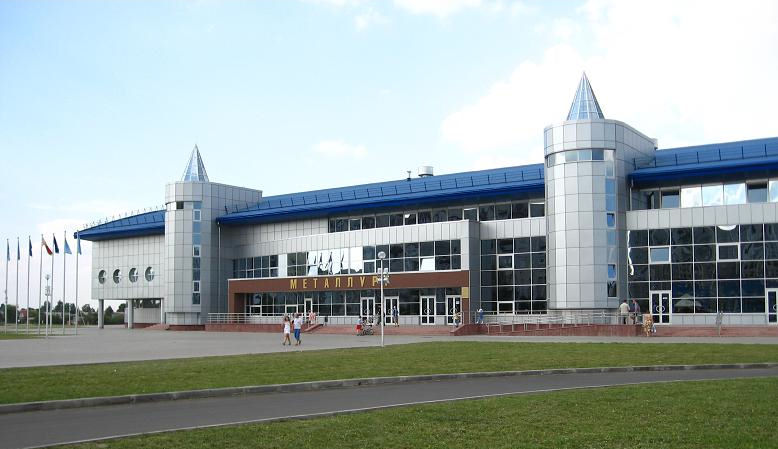

Сердце жлобинского хоккея
29 декабря 2006 года Жлобин получил то, чего ему не хватало все годы металлургической истории, — собственный большой лёд. Дворец открылся матчем сборной ветеранов Гомельской области с командой Президента, а уже 8 января 2007-го здесь сыграл свою первую официальную встречу ХК «Металлург» — и трибуны, вмещающие почти две тысячи зрителей, были забиты под завязку: жлобинчане не видели живого хоккея десять лет.
С тех пор арена стала главной сценой города. «Металлург» — многократный чемпион Беларуси, а его детско-юношеская школа по праву считается одной из самых продуктивных в стране: отсюда вышли Виталий Пинчук, Сергей Кузнецов, Егор Чезганов, Артём Левшунов и другие игроки, которые сегодня блистают в экстралиге и за её пределами.
В 2026 году дворец пережил серьёзное обновление: площадку перестроили в «канадском формате» — 60 × 26 метров вместо прежних 60 × 30. Такой лёд делает игру плотнее, быстрее и зрелищнее, а новые светодиодные светильники придали арене современный вид.
Ледовый дворец — это не просто каток. Это место, где город собирается целиком: за матчами «волков», на школьных сеансах катания, на утренних тренировках малышей, для которых этот лёд — первый в жизни.